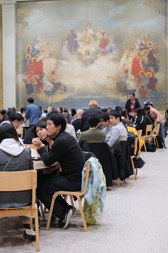

Spring
Annual
Hanami Festival
Cherry-blossom season at MIT: food, culture booths, student volunteers, and a large spring gathering at Walker Memorial.

Events archive
Seasonal festivals, lectures, student welcomes, and recurring programs. Each page is built to keep the current event clear while preserving the yearly record.

Current pages
Cherry-blossom season at MIT: food, culture booths, student volunteers, and a large spring gathering at Walker Memorial.
Confirmed speakers connect tsunami science, disaster management, infrastructure, and resilience in Japan.

A start-of-year welcome for incoming students, with practical guidance and space to meet the JAM community.

Annual archive